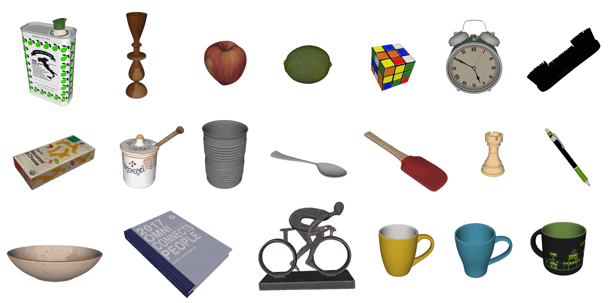
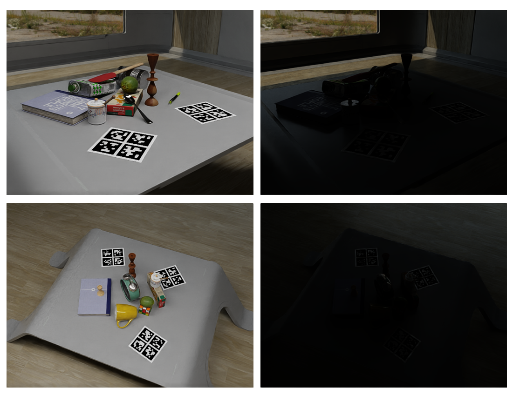

Robust 6D Object Pose Estimation in Low-Light Environments

Figure 1: Our dataset covers object models with diverse challenges.

Figure 2: Samples of Dark6D dataset. Corresponding normal-light image on the left.
Motivation
6D object pose estimation is essential for applications such as robotics and augmented reality, where accurate spatial understanding of objects is required. Most existing methods assume well-lit environments and suffer performance degradation under low-light conditions due to weak textures, increased noise, and unreliable depth observations. These challenges lead to unstable feature representations and inaccurate pose predictions. Developing robust pose estimation approaches that remain reliable under low-light conditions is crucial for real-world deployment.
Task
This benchmark proposes a task of 6D pose estimation from RGB-D images in real time. We provide datasets containing RGB images, depth maps, segmentation masks, and ground-truth pose annotations. Researchers can use these datasets to explore different methods.
Dataset
The dataset includes 20 rich and low-texture objects. Images are rendered at $640 \times 480$, resulting in 60k samples, including low-light and normal-light images. Camera positions are uniformly sampled in a spatial range while pointing to the scene center for visibility. Each frame records RGB, depth, segmentation, and pose. This provides diverse appearance and multi-view geometric observations.
Download the datasetsRegistration
To participate, please send us an email confirming your interest and optionally your affiliation and co-authors.
Submission
Submit results before the deadline with a one-page description of your method. Results should be in a .txt file with image names, estimated 6D poses, and estimation speed (ms per pose).
Evaluation
We use ADD and ADD-S metrics. Given ground truth rotation R and translation T, and estimated rotation R_e and translation T_e, ADD computes mean distances between 3D points transformed by [R_e|T_e] and [R|T]. ADD-S handles symmetry-invariant pose errors.
Organizers
- Honglin Yuan 1
- Yuting Zhang 1
1: Nanjing University of Information Science and Technology, School of Computer Science and School of Software
Contact us